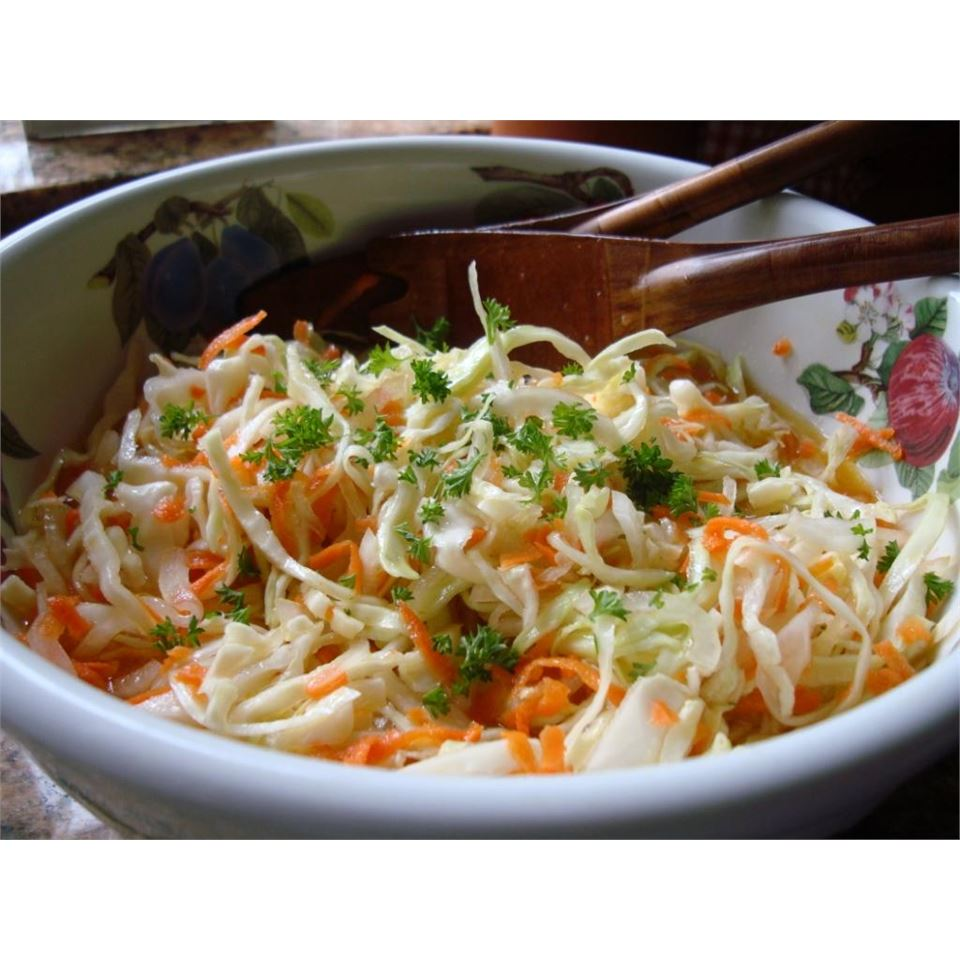

Amish Slaw

Amish Slaw
I live in a wonderful Amish community and the ladies here are wonderful cooks. This is a lovely cole slaw recipe for those who like slaw without mayonnaise.
Ingredients
- 1 medium head cabbage, cored and shredded
- 1 medium onion, finely chopped
- 1 cup white sugar
- 1 cup vinegar
- 1 teaspoon salt
- In a large bowl
- toss together the cabbage
- In a small saucepan, combine the vinegar
- Bring to a boil
- and toss to coat
back